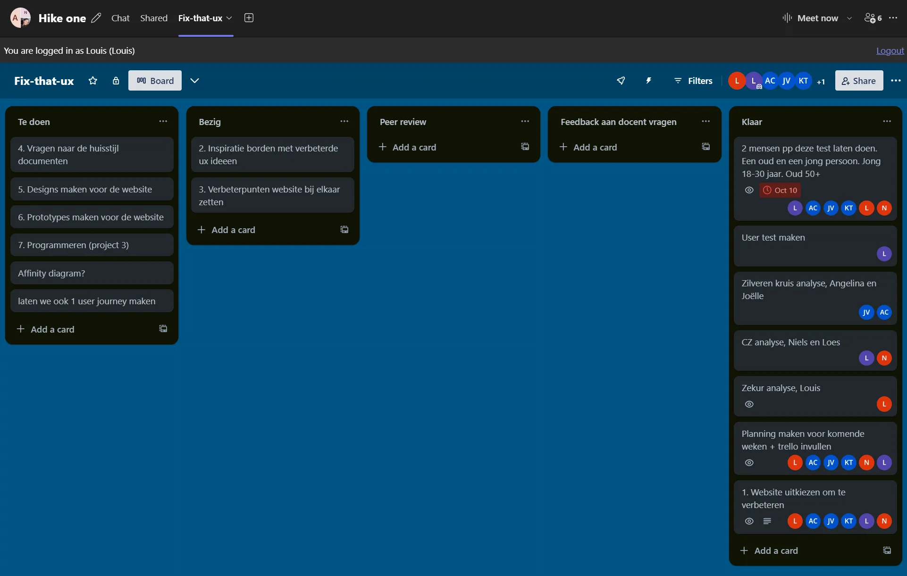
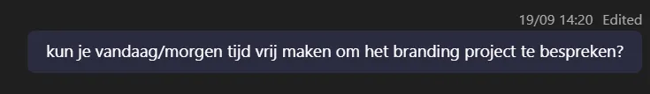
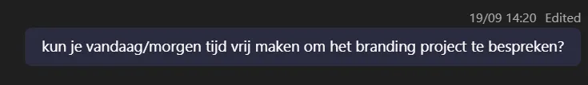

Interactive Media Products
I oriented in relevant tech, media and design landscapes, created interactive media products and tested them with users, clients, and other stakeholders
Orient
In project one, I tried out different techniques for the brand identity of the client. In the first style I used a rusty, vintage, American look, in the second style, I used a neon-style.

Relevant tech, media and design landscape
To make interactive media products I used applications that are modern and widely used by other people in
this industry. For digital UI/UX projects I used Figma, for branding I used the Adobe Creative Cloud
including Adobe Illustrator and Adobe Photoshop. To get informed what is currently fresh and trendy, I
used websites like Pinterest, Dribbble, and Behance.
Interactive Media Products
In this semester, I made a few interactive media products. One is for the health insurer ZEKUR. and the other one is my own portfolio.
ZEKUR. interactive media product
This project was provided by Hike One in Amsterdam. We got challenged to improve the user flow of a person signing up for a health insurance. I first researched competitors, analyzed the user flow, then did user tests, and then made an interactive prototype in Figma.

My portfolio interactive media product
For my portfolio, I made a few interactive elements. For example, the dropdown menu, the hamburger menu, and the contact form. I made these elements with HTML, CSS, and JavaScript.

Tested with users and stakeholders
In this semester, I did multiple user tests. Mainly for the UX and Development project ZEKUR., but also for my own portfolio.
ZEKUR. user tests
For this health insurer we improved an existing user flow, I tested the flow with the end users and I let them go through the process, I wrote down what I noticed, asked them questions during the process and after the process. I documented this in the Word Document below.


Portfolio user tests
To make sure my portfolio is user friendly for the target audience, I conducted multiple tests to find out if I can improve the user experience.
Development and version control
For this learning outcome, I explored front-end development languages, wrote code and documented it in a version control environment.
Front-end development languages
In this semester I learned alot about HTML, CSS and JavaScript. (more to come)
Document in a version control environment
In all web development projects I made use of Git and made sure the code is clear and accessible. For
example, I added code comments to explain the purpose and use of different HTML, CSS and JavaScript
parts, providing clarity to others and my future self. For every project, I also made a README file
where I explain details about the project and how to use it.
README Files
For all my development projects I made README files to detail what the project is about and to how to set it up.

Using Git
To track my progress and to have a smooth collaboration and version control I used Github. This allowed me to maintain the project's health by keping it organized and understandable.

Comments on Code
To make code readable, I commented parts of my code that needed explanation. Heres one example:

Iterative design
In learning outcome 3, I explored and used professional design tools and iteratively designed visual works.
Use professional design tools
I used industry standard tools in the Adobe Creative Cloud suite. Besides Adobe, I also made use of Figma which is the industry standard for UI/UX related projects.

Adobe After Effects
Adobe After Effects is a digital visual effects, motion graphics, and compositing software used for creating animations, special effects, and motion graphics for film, video, and multimedia projects.
Adobe Illustrator
I used this app to design media expressions like Logos, Posters, Stickers, and other branding elements. It's a great tool for designing printed matter.
Adobe Photoshop
Like the name already suggests, this tool is great for editing photos. In project 1 I often used this app to make mockups that I could present to the client.
Adobe Indesign
This tool is great for making books, magazines, and other printed matter. I used this tool to make the brand guide for Veneman en de Groot.
Figma
Figma is a great tool for UI/UX projects. I used this tool for project 1 and 2 to make wireframes, prototypes, UI/UX designs. This tool also is great for collaboration between people in my team.
Iteratively
When making the designs for the products, I made several options before I came to the final design. I
adjusted designs based on feedback from users, clients, peers and experts. Below are a few
examples.


All iterations
Design visual works
(Nothing Yet)
Professional standard
In this semester I applied professional practice, both individually and in teams, in areas of project organisation, communication with stakeholders, exploratory research, and reporting.
Project Organisation
Together with my team, I set goals, created timelines, divided tasks among team members, and tracked progress.

Communication with Stakeholders
Communicating with stakeholders is very important in every project. I had regular contact with our client
in project 1 about the project. To show our progress and gather feedback, I had 2 meetings with the
client. One online on Teams and one in person as a presentation.
Exploratory Research
For project 2, I researched the current flow of a person visiting our client website Betur.nl to find out what the bottlenecks are and how we can improve the UI/UX.
Reporting
(Nothing Yet)
Personal Leadership
For this learning outcome, I took the initiative in asking for, and reflecting on feedback. I also identifed by own core values as the basis for my study career and professional development.
Taking the initiative in asking for, and reflecting on, feedback
In project 1, I have been actively asking the client for feedback about my progress on the new branding for Veneman en de Groot. I did this on Teams, but also in person.


 

Identifying your own core values
This semester, I have learned more about my core values, which have helped me in both my studies and professional development. One of the values I find most important is continuous improvement. I now understand that learning is something that never stops, and asking for feedback is a big part of getting better. I make sure to ask for feedback from my peers, teachers, and clients, and I see this feedback as a way to improve my work. Thinking carefully about this feedback has helped me grow and improve.
Another value that has become important to me is being true to myself. I believe it’s important to be authentic in my work and the way I present myself as a professional. Whether I continue in Media Design or take another path, I want my work to reflect who I really am. By understanding my strengths and working on my weaknesses, I am creating a professional identity that feels honest and real.
This growth has also shaped the kind of professional I want to become. I aim to be someone who not only does great work but also stays open to learning and stays true to myself. By asking for feedback and using it to improve, I make sure I am always growing. And by staying true to my core values, I remain authentic in everything I do.